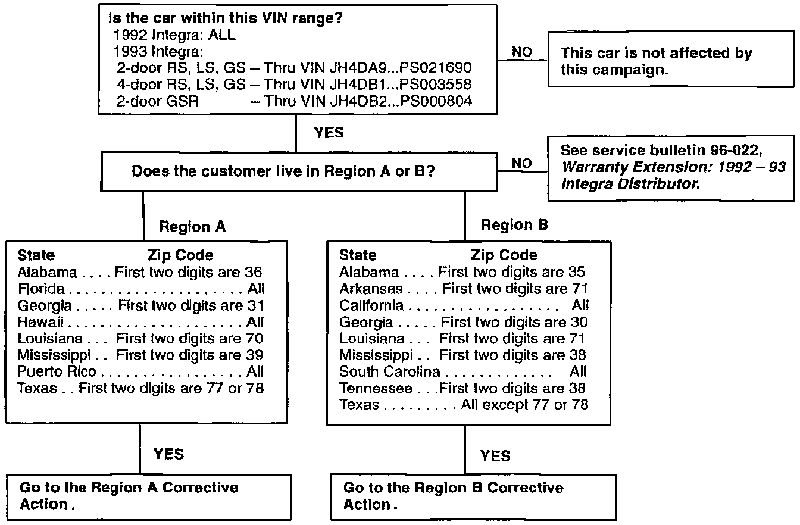
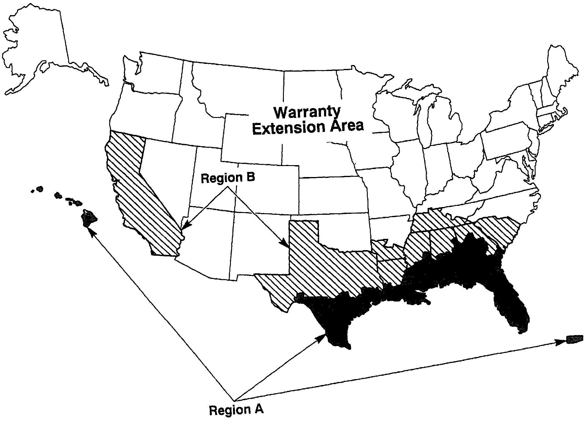

Campaign - Distributor (Excessive Clearance): Overview
September 10, 1996BULLETIN NO
96-015
YEAR
1992 - 93
MODEL
INTEGRA
VIN APPLICATION
See VEHICLE5
AFFECTED
Product Update Campaign: 1992 - 93 Integra Distributor (Supersedes 96-015, dated June 11, 1996)
BACKGROUND
The distributor bearing may develop excessive clearance. If this happens, the engine will not start. This product update campaign is being conducted to help eliminate any possibility of the customer's car not starling.
VEHICLES AFFECTED
1992 Integra: ALL
1993 Integra:
2-door RS, LS, GS - Thru VIN JH4DA9...PS021690
4-door RS, LS, GS - Thru VIN JH4DB1...PS003558
2-door GSR - Thru VIN JH4DB2...PS000804
GENERAL INFORMATION
This product update campaign is being conducted in two regions: Region A and Region B (see map Region A). Depending on mileage, the repair procedure is different for vehicles in Region A. There is only one repair procedure in Region B. Refer to the maps and zip code information in this service bulletin to determine which region you are in, then follow the appropriate CORRECTIVE ACTION.
Owners who live outside Regions A and B are not included in this campaign. They will be notified that the warranty on the distributor assembly has been extended to 6 years or 100,000 miles. Refer to service bulletin 96-022, Warranty Extension: 1992- 93 Integra Distributor; for details.

PROCEDURE GUIDE

WARRANTY EXTENSION AREA MAP FOR REGIONS A AND B
PARTS INFORMATION
Distributor cap kit: P/N 06303-P30-A01
Distributor housing assembly:
RS, LS, OS - P/N O6301-PR4-A01
GSR - P/N O6301-P30-A01
WARRANTY CLAIM INFORMATION
Failed P/N: 30102-PT2-016
Defect code: 721
Contention code: KO8